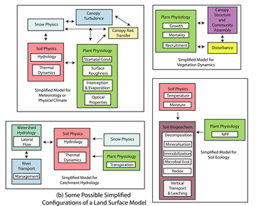

Functionally Assembled Terrestrial Ecosystem Simulator (FATES)
Contributors
 Rosie Fisher
Rosie Fisher  Anne Fouilloux
Anne Fouilloux
Questions
What is FATES?
How can I use FATES?
Objectives
Have an understanding of what FATES is and how it works
Requirements
Evolution of land surface models

reference: Fisher R.A. & Koven C.D. JAMES, 2020
Speaker Notes
- Land Surface Models have significantly evolved through time.
- For instance, representations of numerous processes that are known to impact the dynamics of systems have been incrementally added to Land Surface Models.
- They have been expanded from their initial simple biophysical configurations.
- This includes representations of soil moisture dynamics, stomatal functioning, land surface heterogeneity and surface hydrological processes.
- And plant and soil carbon cycling, dynamic vegetation distributions, fire, urban environments, land cover and management, nitrogen cycling and crops.
- and latterly plant demographic processes, phosphorus cycling, and plant hydraulics.
Evolution of land surface models

reference: Fisher R.A. & Koven C.D. JAMES, 2020
Speaker Notes
- The global carbon budget averaged over the last half-century is shown on this figure.
- For this time period, 82 percent of the total emissions were caused by fossil CO2 emissions and 18 percent by land use change.
- The total emissions were partitioned among the atmosphere (45 perceent), ocean (24 percent), and land (29 percent), with an unattributed budget imbalance (2 percent).
- All components except land use change emissions have significantly grown since 1959.
Evolution of land surface models

reference: Fisher R.A. & Koven C.D. JAMES, 2020
Speaker Notes
- The processes that govern carbon cycle feedbacks are highly affected by both biophysical feedbacks in the Earth system and by land use decisions that are in turn affected by climate impacts on human societies.

Surface processes play a key role in extreme events (heat waves, fires, crop failures, floods, droughts).
Speaker Notes
- Surface processes play a key role in extreme events, such as heat waves, fires, crop failures, floods, droughts.
Evolution of land surface models

reference: Fisher R.A. & Koven C.D. JAMES, 2020
Speaker Notes
- Climate change impacts such as drought and fire are mediated by plant biophysical responses to elevated CO2, which are themselves impacted by limitations imposed by nutrient limitations on growth.
Problems with the status quo

- Perpetual increase in complexity
Speaker Notes
- Developing Land Surface Models by adding complexity in already complex codes is not manageable anymore.
- To face this perpetual increase in complexity, the community needs to better organize code developments.
Land surface modelling in the world

Speaker Notes
- One major issue is that there are few Land Surface Models code developers.
- And Land surface modeling teams are typically not large enough to be able to tackle all of the interacting processes in a modern Land Surface Model.
- A wider collaborative approach is required.
Problems with the status quo
- Perpetual increase in complexity
- Sub-critical development efforts
- Over-simplified representation of ecosystems
Speaker Notes
- So to summarize, we have 3 major problems to solve:
- First, the perpetual increase in complexity.
- Second, the sub-critical development efforts.
- Third, the over-simplified representation of ecosystems.
Ecological processes in land surface models

Speaker Notes
- On this slide, we show 3 different ways to represent ecological processes in Land Surface Models:
- On the left, we have the Big Leaf Model which is the kind of default Land Surface Model used in Climate models.
- Big Leaf models are over simplified and the different types of vegetation do not compete with each other for light or resources.
- The forst tree community has been typically using a complete opposite approach with Stochastic individual models where you model individual trees with specific location and space.
- Stochastic aspect comes from the fact that the location of the trees are random and where the plants die is semi-random.
- These models are great but very expensive.
- So the cohort model is a compromize between the two approaches.
Solutions
- Perpetual increase in complexity
- Complexity management
- Sub-critical development efforts
- Open-source community development
- Over-simplified representation of ecosystems
- Balanced ecological realism
Speaker Notes
- To develop these kind of models and achieve our final goal which is to improve climate models and better assess the impact of climate changes on our societies, we need:
- to find a way to manage the complexity of the codes by using a modular approach.
- make all our development open source and available to all the community.
- To make compromize and balance ecological realism.
What is FATES?
FATES stands for the Functionally Assembled Terrestrial Ecosystem Simulator and is a module with fully open-source development:
Speaker Notes
- FATES stands for the Functionally Assembled Terrestrial Ecosystem Simulator.
- It is fully open source.
FATES open-source
- Available on GitHub: https://github.com/NGEET/fates
It is designed to operate in a “host” land surface model, which simulates:
- plant physiology,
- competitive processes,
- ecosystem assembly and
- vegetation distribution
Speaker Notes
- It is available on github.
- It is designed to operate with a host land surface model.
- FATES simulates plant physiology, competitive processes, ecosystem assembly and vegetation distribution.
Cohort model
reference: Benchmarking and parameter sensitivity of physiological and vegetation dynamics using the Functionally Assembled Terrestrial Ecosystem Simulator (FATES) at Barro Colorado Island, Panama Charles D. Koven et al., 2020.
Speaker Notes
- With FATES, trees have a height and compete for light.
Balanced ecological realism
What are the advances allowed by a demographic model?
- Representation of light competition & ecosystem assembly.
- Prediction of the distribution of plants based on their functional traits.
- Lags between climate and vegetation change and growth after disturbances.
- Better representation of physiological processes (hydraulics, fire, nutrients).
Speaker Notes
- The following advances are enabled with a demongraphic model:
- A better representation of light competition and ecosystem assembly.
- The prediction of the distribution of plants based on their functional traits.
- The lags between climate and vegetation change and growth after disturbances.
- The better representation of physiological processes such as hydraulics, fire and nutrients.

Speaker Notes
- On this slide, we show how the code developments are taking place.
- The approach is modular and each component can be developed separately.
-
This approach significantly speed-up developments.
Speaker Notes
- Thanks to this modular approach, new groups joined our community and contribute to develop new modules.
Open source, community development
Growth in participation in FATES

Speaker Notes
- Many new developments have been added to FATES and we see an increasing number of developers contributing to the code.
FATES development
- About 39 funded researchers.
- 6 countries, 26+ institutions.
- 130 participants at the recent planning meeting.
- 3 Earth System Modelling Centres.
- More than 11 proposal funded (2020). Many more ongoing.
Speaker Notes
- There are about 39 funded researchers working on the FATES code.
- These developers are spread in about 6 different countries and more than 26 different institutions.
- We had more than 130 participants at the recent planning meeting in 2020.
- About 3 Earth Systemo Modelling Centres are using FATES.
- And more than 11 proposal funded in 2020 for further developing FATES.
Code complexity management
- Modular complexity: a strategy to manage the proliferation of processes

Reference: Fisher R.A. & Koven C.D. “Perspectives on the Future of Land Surface Models and the Challenges of Representing Complex Terrestrial Systems” AGU Perspective article. JAMES, 2020
Speaker Notes
- The code is fully modular and easy to update.
FATES reduced complexity modes
Speaker Notes
- To help code developers, a number of reduced complexity modes were made available.
But that’s not all…
FATES (in common with all land surface models that are part of ESMs) remains technically challenging to run.
- Scripting environment is complicated.
- Porting model to a new supercomputer is incredibly hard.
- Running at single sites or regions is more cumbersome than running globally.
- Tools developed on one platform often do not work on another.
- Workflows are complicated by computing architecture.
Speaker Notes
- However, we know that more needs to be done for simplifying the usage of FATES and reduce the learning curve.
- Running FATES remains technically challenging.
- The scripting environment is complicated,
- porting the model to new platforms can be incredibly hard,
- running at single sites or regions is more cumbersome than running the code globally,
- and workflows are complicated to put in place.
But that’s not all…
Interesting science is at the interface of the input parameters, model processes and emergent outcomes.

Reference: Eva Lieungh, Sonya Geange, Hui Tang
Speaker Notes
- Interesting science is at the interface of the input parameters, model processes and emergent outcomes.
- We know it takes a very long time for a new researcher to run successfully a simple FATES test simulation. In general it takes several months and it is very frustating.
- However, once researchers manage to run FATES, they usually can contribute and improve the model.
-
FATES in Galaxy aims at reducing the learning curve and help researchers to quickly produce scientific results.
How can I use FATES in Galaxy?
- With CLM-FATES Galaxy tool for running operational and long simulations.
- Galaxy climate JupyterLab for learning, developing the model, setting up simulations and visualizing results.
Speaker Notes
- There are two ways to run CLM-FATES in Galaxy and we suggest new users to start with the FATES Galaxy Tool.
- For more advanced users and if you are willing to develop the FATES model, use the Galaxy Climate JupyterLab where you can develop new features, set up simple test simulations and visualize your results.
- The Galaxy FATES tool can then be used to run operational and long simulations.
Key Points
- FATES is a numerical terrestrial ecosystem model used in climate models
Thank you!
This material is the result of a collaborative work. Thanks to the Galaxy Training Network and all the contributors! This material is licensed under the Creative Commons Attribution 4.0 International License.
This material is licensed under the Creative Commons Attribution 4.0 International License.